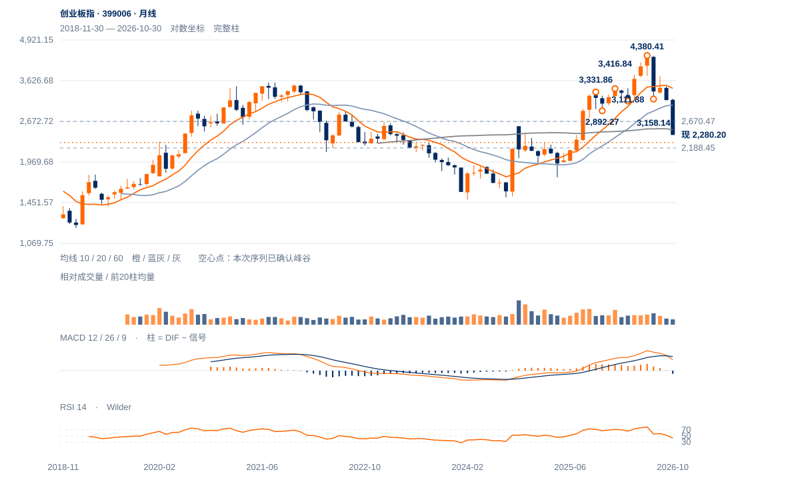

下降扩展
近期偏弱并防急反抽，先看2376能否回收。
近期偏弱并防急反抽，先看2376能否回收。
未来2—6周维持“下降扩展”的波段基准。2494—2554回收以及2626原两日条件分别检验。2376原日收失效已发生。周线转折还需较高/较低同级拐点及完整收盘跟进；本周仍在进行中，不提前计周级确认。
未来1—3个月以深度调整中的低位重建为主；月线重新保持2589以上并抬高周谷才支持恢复，2025低1757不直接作为当前基准目标。

展开图表 ↗2024低1483至2026高4380的升波已深度回吐，2511长期均衡与2576—2590旧突破区域均在上方。周线较低峰序列尚未结束。
2292.20收低2376.28，先前动量减速未阻止价格破谷。旧低转成反抽障碍，不能继续按2376附近已经守住的假设推演。
11-13收2,426.08（-3.32%）；11-16收2,320.02（-4.37%）；11-17收2,292.20（-1.20%）。
RSI14 30.69；ATR14 103.13；相对成交量0.90倍。成交只在同一来源序列内计算相对量与OBV，不据开平分类推断账户动机。
2026-09-22 高3,472.47，确认日2026-09-30；2026-11-04 低2,376.28，确认日2026-11-11；2026-11-05 高2,625.98，确认日2026-11-12
2494—2554回收以及2626原两日条件分别检验。
2376原日收失效已发生。
RSI约30.7，回撤已经较深，急反弹风险真实存在；2376回收并保持是反证，仍需2494及更高供应回收才能恢复结构。
完整周线截至2026-11-13，完整月线截至2026-10-30；11月与本周尚未收完。长期窗口以近5—8年为主。